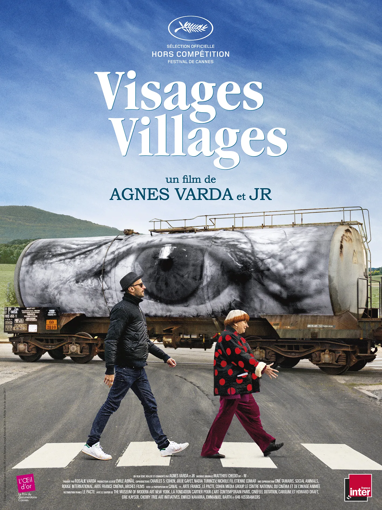
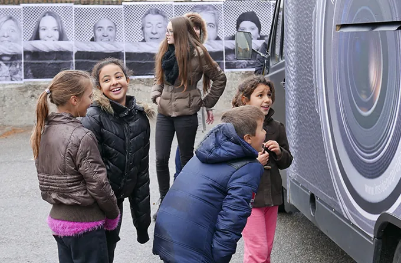
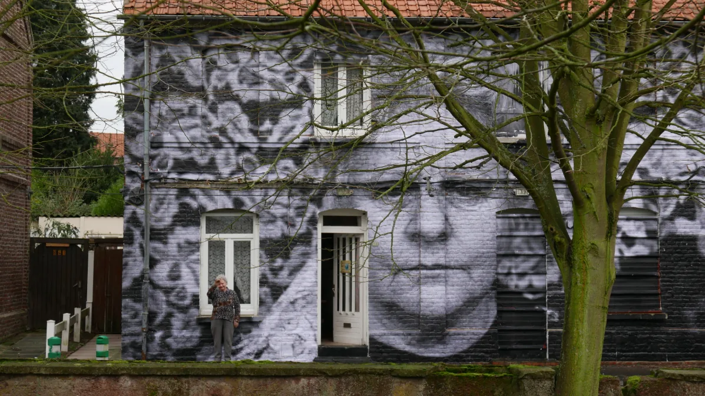
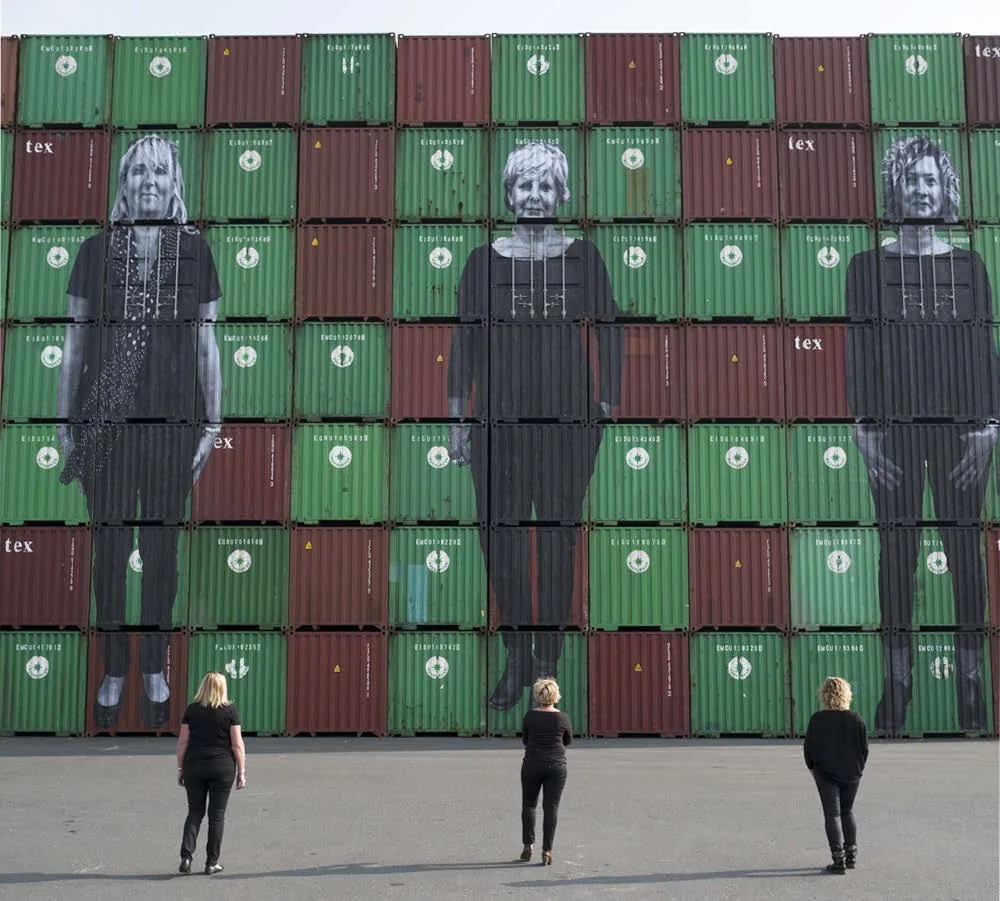
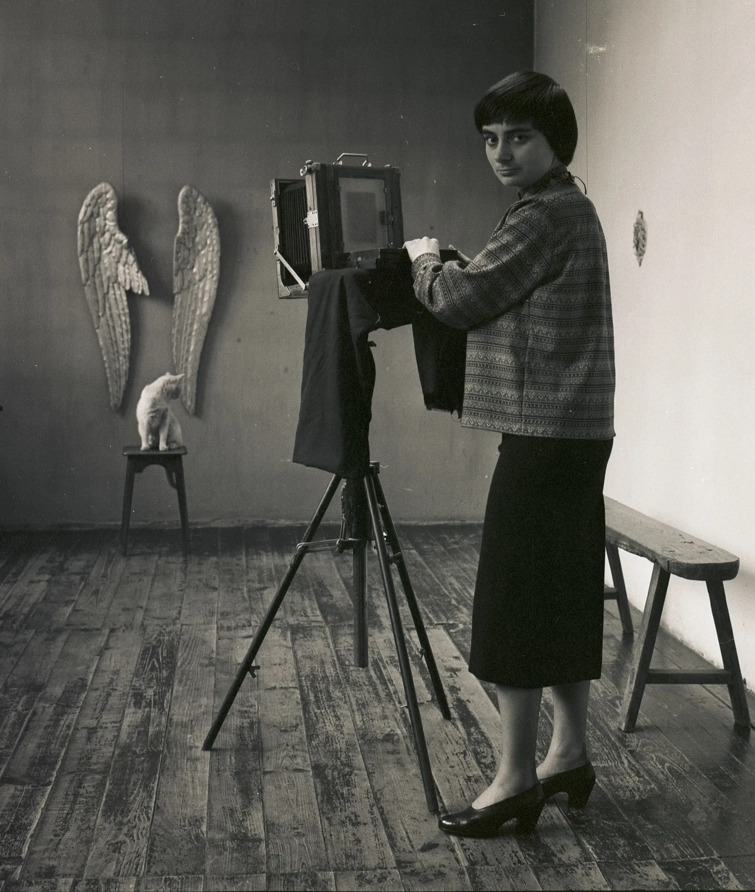
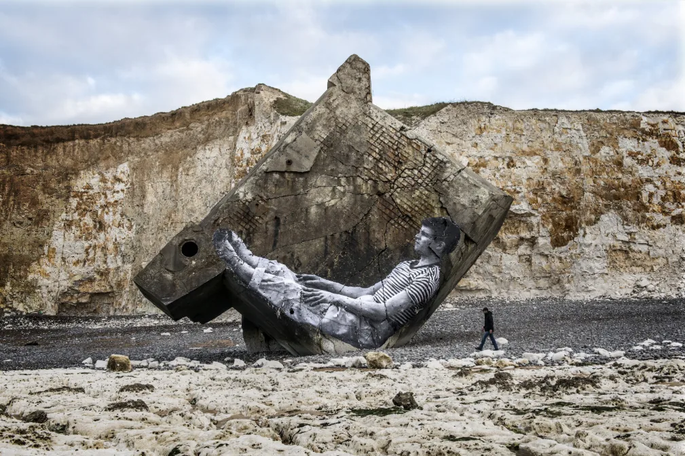

아흔을 앞둔 영화감독과 서른 남짓한 사진가가 트럭 한 대를 몰고 프랑스 시골을 돈다. 트럭 안에는 즉석 사진 부스와 대형 프린터가 들어 있다. 마을 사람을 찍어 건물 한 면만 하게 뽑은 다음, 그 마을의 벽에 붙인다. 아녜스 바르다와 JR 이 함께 만든 다큐멘터리 「바르다가 사랑한 얼굴들」(원제 Visages Villages, 2017) 이야기다.

두 사진가가 만난 영화
이 영화를 사진 잡지에서 다루는 이유는 간단하다. 두 감독이 모두 사진가다. JR 은 사람들의 얼굴을 크게 뽑아 거리의 벽에 붙이는 작업으로 이름을 알렸다. 바르다는 영화를 찍기 전에 사진가였다. 둘은 2015년에 처음 만났고, 도시에서 멀리 떨어진 프랑스 시골에서 영화를 찍자는 데 바로 뜻을 모았다고 한다.
영화는 2017년 칸 영화제 비경쟁 부문에서 상영돼 다큐멘터리 상인 「황금 눈(L'Œil d'or)」을 받았다. 이듬해 아카데미 장편 다큐멘터리 후보에도 올랐다. 바르다의 영화가 아카데미 후보에 오른 것은 이때가 처음이었고, 당시 그는 여든아홉으로 역대 최고령 후보였다. 국내에는 2018년 6월에 개봉했다.

벽에 붙은 얼굴들
북부 프랑스 브뤼에라뷔시에르의 옛 광부 사택은 철거를 앞두고 있었다. 줄지어 선 집 가운데 아직 사는 사람은 광부의 딸 자닌 한 명뿐이었다. JR 은 그 집 앞면에 자닌의 얼굴을 크게 붙인다. 집 앞에서 자기 얼굴을 올려다보던 자닌은 눈물을 흘린다. 같은 동네의 다른 집들에는 바르다가 모아 온 옛 엽서 속 광부들의 사진을 붙였다.
르아브르 항구에서는 부두 노동자가 아니라 그 아내들의 사진을 크게 뽑는다. 늘 남자들이 주인공이던 일터에 여자들의 얼굴을 세운 것이다. 이 영화의 사진은 대부분 이런 식이다. 이름이 알려지지 않은 사람을 찍어, 그 사람이 사는 곳에, 그 사람이 볼 수 있는 크기로 돌려준다.


사진가 아녜스 바르다
바르다는 1948년 중고 롤라이플렉스로 사진을 시작했다. 이듬해 야간 학교를 다니며 사진 자격증을 땄고, 1951년부터 1961년까지 장 빌라르의 국립민중극장(TNP) 전속 사진가로 일했다. 무대와 배우를 찍으면서 첫 장편 「라 푸앵트 쿠르트」(1954)를 만들었다. 영화감독이 된 뒤에도 1960년대 중반까지 사진을 계속 찍었다. 2019년 세상을 떠난 뒤인 2021년, 유족은 1948년부터 1970년 사이에 바르다가 찍은 사진 약 2만 7천 점을 프랑스 릴의 사진 기관(Institut pour la photographie)에 맡겼다.

영화에도 그 시절의 사진이 나온다. 바르다가 젊은 날 찍은 사진가 기 부르댕의 사진을, JR 이 노르망디 해변에 쓰러져 있는 2차 대전 때의 독일군 벙커에 붙인다. 얼마 뒤 다시 찾아가 보니 사진은 밀물에 쓸려 사라지고 없었다. 앙리 카르티에브레송이 묻힌 작은 마을 묘지도 찾아간다. 결정적 순간을 찍던 사진가의 무덤은 찾기 어려울 만큼 소박하다.

붙이고, 사라지게 두는 사진
종이에 뽑아 풀로 붙인 사진은 오래가지 않는다. 비가 오면 젖고, 바닷물이 들면 쓸려 가고, 집이 헐리면 함께 사라진다. 두 사람은 그걸 알면서 붙인다. 필름 사진을 오래 찍어 온 사람에게는 익숙한 감각일지 모른다. 남기려고 찍지만, 찍는 순간이 이미 지나간 시간이라는 것을 알고 찍는다. 카르티에브레송의 무덤 앞에서 바르다는 죽음을 기다린다는 말을 담담하게 꺼낸다.
마지막 장면은 스위스 롤에 있는 장뤽 고다르의 집이다. 바르다는 만날 약속을 잡고 JR 과 함께 찾아갔다. 그러나 문은 열리지 않았고, 창문에는 알쏭달쏭한 메시지만 적혀 있었다. 바르다는 서운함을 감추지 않는다. 얼굴을 찍어 붙이러 다니던 여행이, 가장 보고 싶던 얼굴을 보지 못한 채 끝난다. 사진이 담지 못한 얼굴은 무엇으로 남을까?
정보
- 제목 바르다가 사랑한 얼굴들 (Visages Villages / Faces Places), 2017, 프랑스
- 감독 아녜스 바르다, JR
- 상영 시간 약 90분(자료에 따라 89분·93분)
- 수상 2017 칸 영화제 황금 눈(다큐멘터리 상), 2018 아카데미 장편 다큐멘터리 후보
- 국내 개봉 2018년 6월 14일, 전체 관람가
- 볼 곳 웨이브(구매)